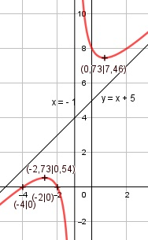

Aufgabe 114 x2 + 6x + 8 f(x) = -------------- x + 1 Quotientenregel erste Ableitung: u = x2 + 6x + 8, u' = 2x + 6 v = x + 1, v' = 1 (2x + 6) * (x + 1) - 1 * (x2 + 6x + 8) f'(x) = ---------------------------------------- (x - 2)2 2x2 + 8x + 6 - x2 - 6x - 8 f'(x) = ---------------------------- (x + 1)2 x2 + 2x - 2 f'(x) = -------------- (x + 1)2 Quotientenregel zweite Ableitung: u = x2 + 2x - 2, u' = 2x + 2 v = (x + 1)2 Kettenregel: v' = 2 * (x + 1) (2x+2)*(x+1)2 - 2*(x+1)*(x2 + 2x - 2) f''(x) = --------------------------------------- (x + 1)4 (x+1)*[(2x + 2)(x+1) - 2*(x2 + 2x - 2) f''(x) = ---------------------------------------- (x + 1)4 2x2 + 4x + 2 - 2x2 - 4x + 4 f''(x) = ----------------------------- (x + 1)3 6 f''(x) = ---------- (x + 1)3 Zur Beurteilung, ob f'''(x) ≠ 0 : (Begründung siehe Aufgabe 105) u = 6, u' = 0 u' 0 f'''(x) = --- = ---------- = 0 für alle x ≠ - 1 v (x + 1)3 Polstellen, Nenner = 0: x + 1 = 0 |-1 x = -1 Nenner = 0 und Zähler = (-1)2+6*(-1)+8 = 3 ≠ 0 --> senkrechte Asymptote Definitionsbereich: -∞ < x < ∞, x ≠ -1 Zählergrad größer als Nennergrad --> Näherungskurve 3 f(x) = x2 + 6x + 8 : x + 1 = x + 5 + ------ -(x2 + x) x - 2 ----------- 5x + 8 -(5x + 5) ----------- 3 3 x + 5 + ------ geht gegen x + 5 für x --> ± ∞ x - 2 Wertebereich: -∞ < f(x) ≤ 0,54 und 7,46 ≤ f(x) < ∞ (siehe Extrempunkte) Symmetrie zur y-Achse bzw. zum Punkt (0|0): (-x)2 + 6(-x) + 8 x2 - 6x + 8 f(-x) = ------------------- = ------------- (-x) + 1 -x + 1 x2 - 6x + 8 f(-x) = ------------- = ≠ f(x) -(x - 1) --> keine Achsensymmetrie x2 - 6x + 8 -f(-x) = ------------- = ≠ f(x) x - 1 --> keine Punktsymmetrie Nullstellen: f(x) = 0 x2 + 6x + 8 f(x) = -------------- |*(x - 1) x - 1 x2 + 6x + 8 = 0 p, q - Formel p = 6, q = 8 x1,2 = x1,2 = -3 ± x1,2 = -3 ± x1,2 = -3 ± 1 x1 = -2 x2 = -4 N1(-2|0), N2(-4|0) Schnittpunkt mit der y-Achse: x = 0 02 + 6 * 0 + 8 f(0) = ------------------ = 8 0 + 1 Sy(0|8) Extrempunkte: f'(x) = 0 x2 + 2x - 2 -------------- = 0 |*(x + 1)2 (x + 1)2 x2 + 2x - 2 = 0 p, q - Formel p = 2, q = -2 x1,2 = x1,2 = -1 ± x1,2 = -1 ± x1,22 = -1 ± 1,73 x1 = -2,73 (-2,73)2 + 6 * (-2,73) + 8 f(-2,73) = ---------------------------- = 0,54 -2,73 + 1 x2 = 0 ,73 0,732 + 6 * 0,73 + 8 f(0,73) = ----------------------- = 7,46 0,73 + 1 6 f''(-2,73) = --------------- < 0 --> (- 2,73 + 1)3 Hochpunkt (-2,73|0,54) 6 f''(0,73) = -------------- > 0 --> (0,73 + 1)3 Tiefpunkt (0,73|7,46) Wendepunkte: f''(x) = 0 6 ----------- = 0 |*(x + 1)3 (x + 1)3 6 = 0 Widerspruch --> keine Wendepunkte Graph:
